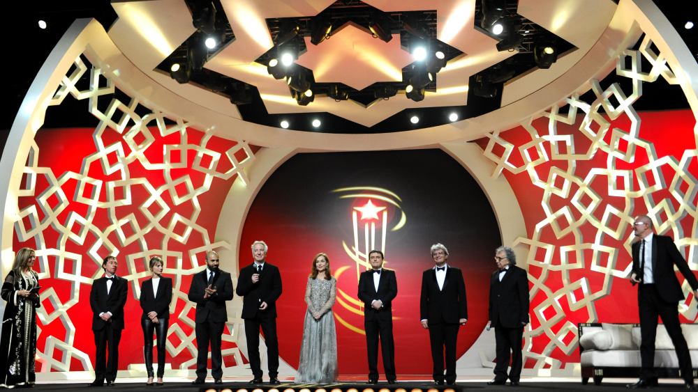
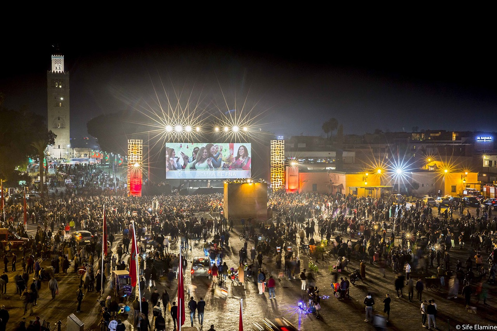
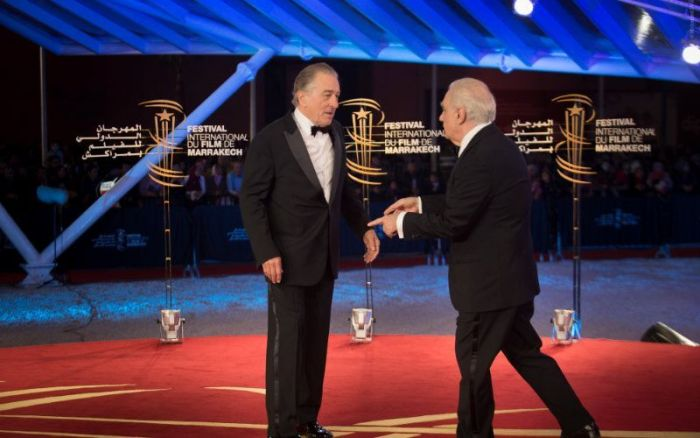
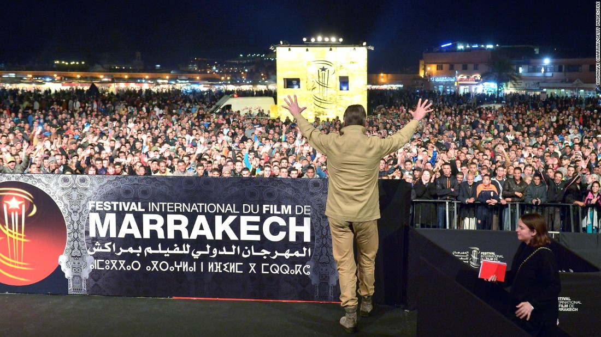
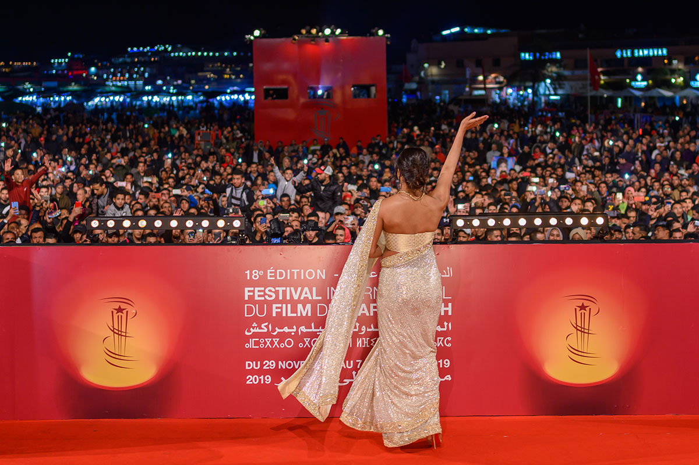

FESTIVAL INTERNATIONAL DU FILM MARRAKECH
|
Le festival est créé en 2001 à l’initiative de Sa Majesté le Roi Mohammed VI. En dépit d’une conjoncture internationale maussade marquée par les événements du 11-Septembre à New York, le Maroc imagine son tout nouveau festival autant comme une plate-forme prestigieuse entièrement dédiée au 7e art et à ses talents, que comme un pont interculturel entre les nations. C’est en ce sens que s’impose rapidement le choix de la ville de Marrakech – capitale des grandes dynasties marocaines depuis l’épopée des Almoravides et l’ouverture du Maroc sur le Maghreb et l’Andalousie. C'est également une métropole en pleine expansion bénéficiant des infrastructures nécessaires à l’accueil d’un nouvel événement à dimension internationale. Le producteur français Daniel Toscan du Plantier, ami du royaume et de la ville, tient alors à associer sa vision à celle des partenaires marocains, en acceptant de mener l’équipe des responsables de la mise en chantier, dans différents lieux à travers la ville, d’une première édition du « Festival de Marrakech ». Figurent parmi les objectifs prioritaires de cette nouvelle manifestation : la mise en valeur d’œuvres cinématographiques de qualité – contribuant ainsi à l’évolution artistique du cinéma mondial –, le développement de l’industrie du film au Maroc et la promotion de l’image du Maroc à travers le monde. |
 | |
|  |
Pour la deuxième édition du festival, le Roi décide de créer une organisation à but non lucratif reconnue d’utilité publique – la fondation du festival international du film de Marrakech –, présidée par Son Altesse Royale le Prince Moulay Rachid. Elle permet de donner un cadre institutionnel à l’événement et d’en professionnaliser l’organisation et la gestion. La fondation devient alors l’unique détentrice des droits patrimoniaux résultant de l’exploitation du festival international du film de Marrakech. Sous la supervision de la fondation et de son vice-président délégué – André Azoulay, conseiller du Roi –, le président du festival Daniel Toscan du Plantier assure la co-organisation de son édition annuelle, et dirige son équipe au sein de la société Georges Cravenne Conseil (GCC) jusqu’à son décès prématuré en février 2003. Pour la 3e édition du festival, la veuve du président, Mélita Toscan du Plantier, directrice des relations extérieures et du protocole des deux premières éditions, est nommée directrice du festival international du film de Marrakech. |
|
|
Ce festival, qui se déroule chaque année sur plusieurs jours dans le courant de l’automne, rassemble de nombreuses personnalités du cinéma de renommée internationale 12, et a vu à la présidence de son jury des personnes telles que Francis Ford Coppola, Martin Scorsese, Roman Polanski ou encore Emir Kusturica. Le jury du festival regroupe des cinéastes, des comédiens, mais aussi des écrivains et personnalités des arts et des lettres, et s'attache à récompenser les meilleurs longs métrages, avec 6 grands prix. Le festival s'articule autour de plusieurs manifestations : la compétition officielle, la présentation d'une sélection de films hors compétition, les hommages rendus à des personnalités et à un cinéma du monde, la compétition des films Cinécoles, les Masterclass, les projections populaires sur la place Jemaa el-Fna et les projections en audio-description (initiative unique au Maroc). Le festival est sous le haut patronage de sa Majesté Mohammed VI et présidé par Son Altesse Royale le prince Moulay Rachid. |
 | |
|  |
Depuis 2008, le Festival de Marrakech a intégré dans sa programmation le cinéma pour non et malvoyants17. Chaque année, une audience de personnes non et malvoyantes vient assister à la projection de films adaptés en audiodescription18. Le Programme des films en audio-description est offert en braille et en trois langues, avec la participation del'OAPAM (Organisation Alaouite pour la Protection des Aveugles au Maroc). Cette expérience est une première en Afrique et dans le monde arabe19. Un séminaire d’écriture de scénarios au profit de cinéastes marocains est organisé depuis 2015, sur une initiative conjointe de la Fondation du Festival International du Film de Marrakech et du Centre Cinématographique Marocain21. La Résidence d’Écriture réunit des participant(e)s marocain(e)s, réalisateurs et réalisateur/scénaristes22, avec des tuteurs étrangers de renom ayant la pratique des ateliers d’écriture et souhaitant partager leur expérience. Cet événement s’adresse à des porteurs de projet bénéficiant du Fonds d'Aide à la Production Cinématographique Nationale. |
|
|
Néanmoins, le site d'informations Médias 24 considère le festival, lors de son édition 2014, comme concentré essentiellement sur la présence de stars avec un positionnement cinématographique mal défini24. Les magazines français Studio magazine, Première et Les Inrockuptibles n'y envoient plus leurs journalistes, estimant que l'événement est plus fait pour attirer la presse people que la presse cinéma24. Toujours selon Media 24, le prix qu'il décerne, L'Étoile d'or, n'a que peu de notoriété et n'influe pas sur la carrière de ceux qui le reçoivent24. Enfin, le festival souffre aussi de l'absence d'un marché du film qui permettrait à des producteurs de vendre leurs films à l'international24. |
 | |